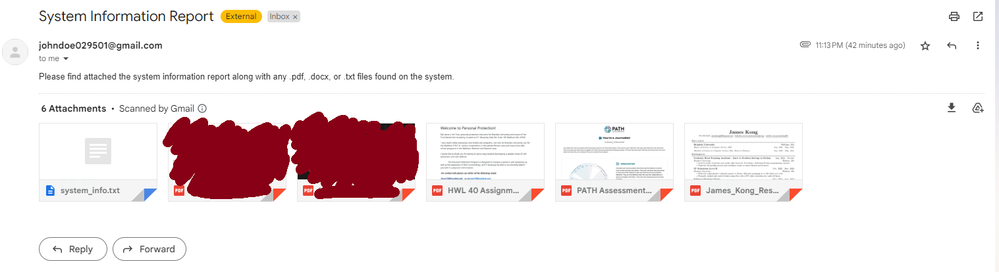
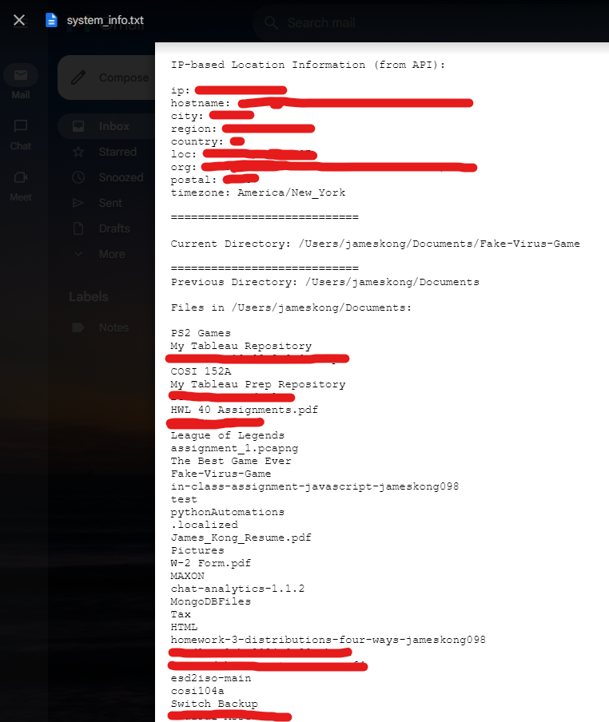
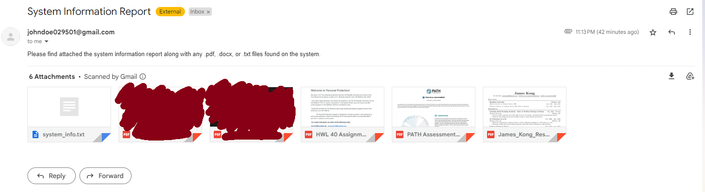
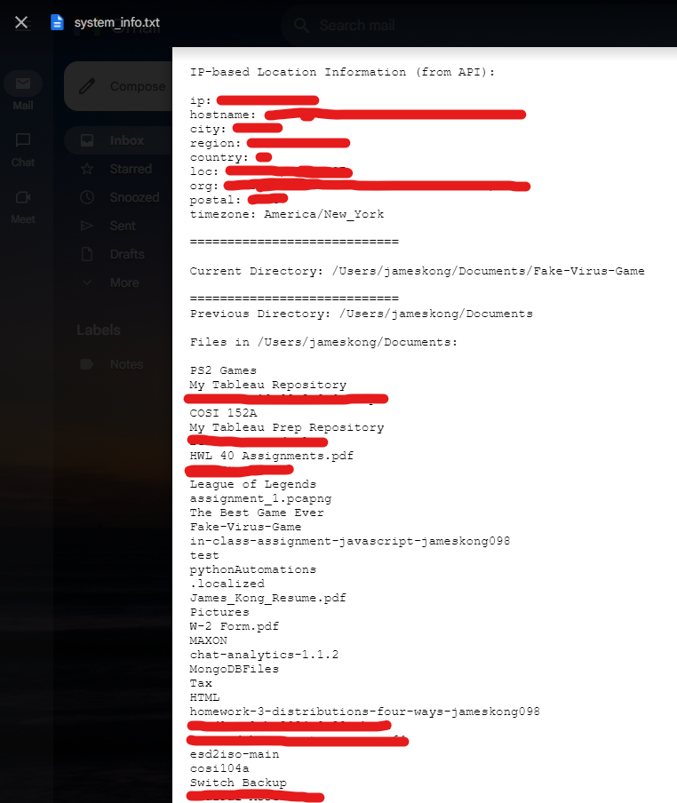
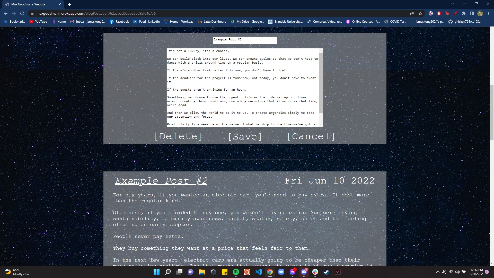
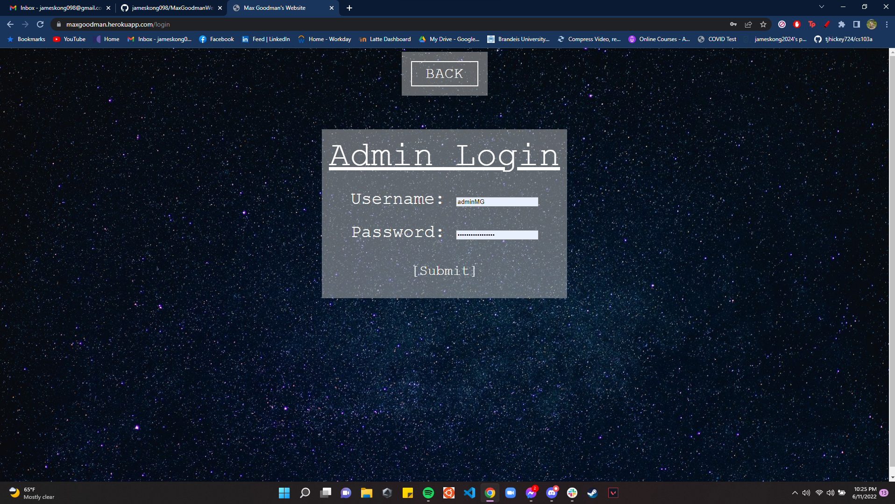
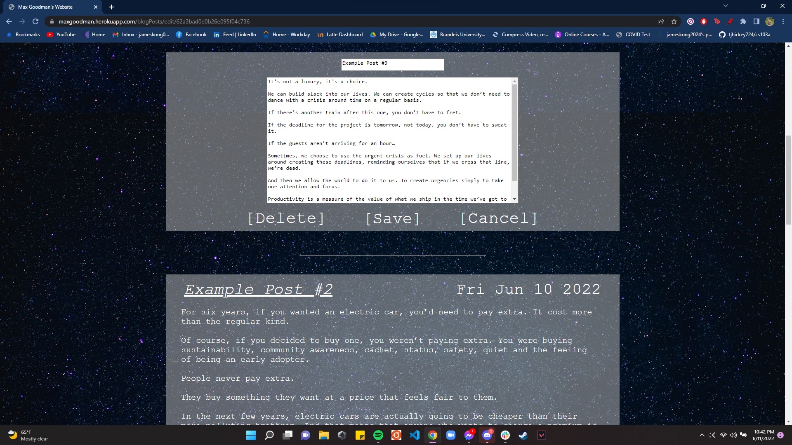
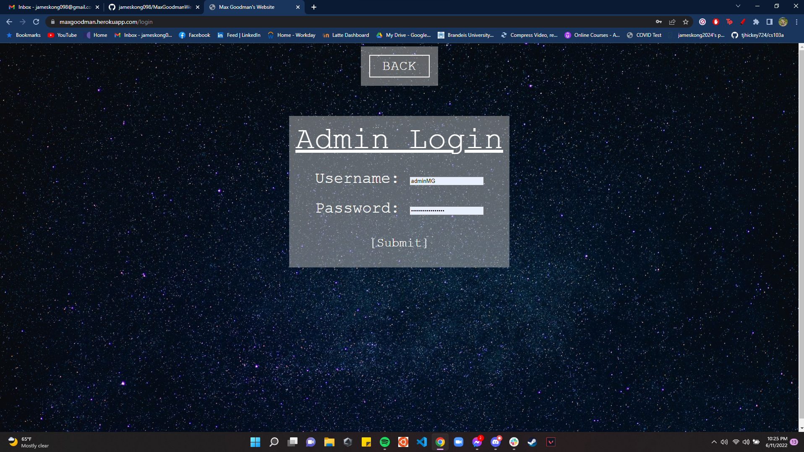

About Me
I'm James Kong, a driven Computer Science student at Brandeis University with a knack for solving technical challenges. I've gained hands-on experience as an IT Help Desk Technician and Software Engineer Intern, where I've excelled in troubleshooting and developing innovative solutions. As a Lead Mobile App Developer, I've led a talented team in crafting a popular React Native app, showcasing my ability to collaborate and deliver user-focused solutions. I bring a strong foundation in Java, Python, and JavaScript, along with a passion for exploring new technologies.
Experience
Graduate Head Teaching Assistant - Intro to Problem Solving in Python
Brandeis University | Waltham, Massachusetts, United States
Aug 2024 - Dec 2024 | 5 months
• Lead bi-weekly recitations for a class of 70 students, facilitating in-depth discussions and reinforcing Python programming concepts
• Conduct weekly office hours to provide personalized academic support and guidance
• Oversee the grading process and coordinate exams to ensure fairness and accuracy
Skills: Customer Service, Technical Support, Troubleshooting, Critical Thinking, Communication
IT Technician Level II
Brandeis University | Waltham, Massachusetts, United States
Nov 2022 - May 2024 | 1 year, 7 months
• Delivered comprehensive technical support to clients, efficiently managing up to 350 tickets per week
• Promptly tracked and resolved tickets using Jira with a 85% ticket resolution rate under 48 hours
• Facilitated the re-imaging of staff and student devices, optimizing system performances
Skills: Customer Service, Technical Support, Troubleshooting, Critical Thinking, Communication
Software Engineer Intern
Zebra Technologies | Dedham, Massachusetts, United States
May 2023 - Aug 2023 | 4 months
• Developed a machine learning prototype interface for payroll anomaly detection using the Isolation Forest algorithm in Python, analyzing over 5.4k transactions from an IBM Db2 database streamlined by optimized SQL queries
• Automated API documentation according to OpenAPI specifications, reducing documentation time by 60% through custom Gradle tasks and plugins
• Refactored Punch API and wrote extensive unit tests using JUnit and Mockito, achieving a test coverage of 95% across all Punch service and method classes
Skills: REST APIs, Relational Databases, Gradle, Groovy, React.js, Mockito, Java, JavaScript
Lead Mobile App Developer
Branda | Waltham, Massachusetts, United States
April 2022 - July 2023 | 1 year, 4 months
• Directed and mentored a team of 15 student developers on a React Native mobile app rated 4.5/5 stars and used by over 1.6k users daily
• Increased code efficiency by integrating new API routes and configurations into the backend, enhancing scalability and reducing response times by 30% during peak usage periods
• Improved user experience by implementing a chat bot, revamping the hours page to auto-refresh, adding dark maps to shuttle tracking tab, and fixing miscellaneous bugs
Skills: Cascading Style Sheets (CSS), MongoDB, React Native, Object-Oriented Programming (OOP), JavaScript
Computer Science Instructor Level II
Juni Learning | San Francisco, United States (Remote)
May 2021 - August 2022 | 1 year, 4 months
• Provided engaging Python and Java lessons to a diverse group of students aged 8-16, fostering a passion for programming and technology among young learners
• Tailored teaching methods to suit individual skill levels and learning preferences, resulting in a 20% improvement in student comprehension and enthusiasm for coding
• Implemented effective record-keeping practices to monitor student progress and development, ensuring clear communication with parents and guardians about achievements and areas for improvement
Skills: Teaching, Communication
Projects
Public Transportation Systems Efficiency Analysis
November 2024 - December 2024
An interactive data visualization using D3.v4 and javascript that explores various countries spending patterns on railway systems compared to the usage of those systems.
This includes various quality measures and spending breakdowns as well. The final webpage additionally contains a description, analysis, and walk
through of the visualization and creation process. This visualization will run both on chrome and firefox.
Tools: Javascript, D3.js, HTML, CSS
Trojan Horse Game
April 2024
This project implements a trojan horse-style game where the game serves as the trojan horse, containing a hidden payload in the form of a computer scraping script.
The script gathers information in the background such as IP Address, approximate location, list of directories and files leading to the root,
list of all running proccesses, and general system info such as CPU type. The program can also optionally
send the information to a designated email address.
 



Tools: Python, Pygame, Requests, Sys, Threading, OS, Subprocess
Movie Portfolio Website
June 2022
I designed a portfolio website for a friend to showcase his films, animations, and blog posts.
The website includes an admin login system that allows him to edit post titles and descriptions, add new posts, and delete old ones.
To manage the data effectively, I utilized a MongoDB database for storing post links and descriptions.
 



Tools: HTML, CSS, Express.js, Javascript, MongoDB
Education
Brandeis University
Master of Science - MS, Computer Science
August 2024 - May 2025
Brandeis University
Bachelor of Science - BS, Computer Science
Minor in Business
August 2020 - May 2024
Sharon High School
High School Diploma
August 2016 - June 2020
Activities and societies: Captain of XC and T&F Teams, Volunteer at Sharon Youth Running Program 2018, 5 AP Classes, 6 Honors Classes, Principal Clarinetist in Honors Band, Tri-M Music Honor Society Executive Member (Band Chair), NEC MYWE Band Clarinetist